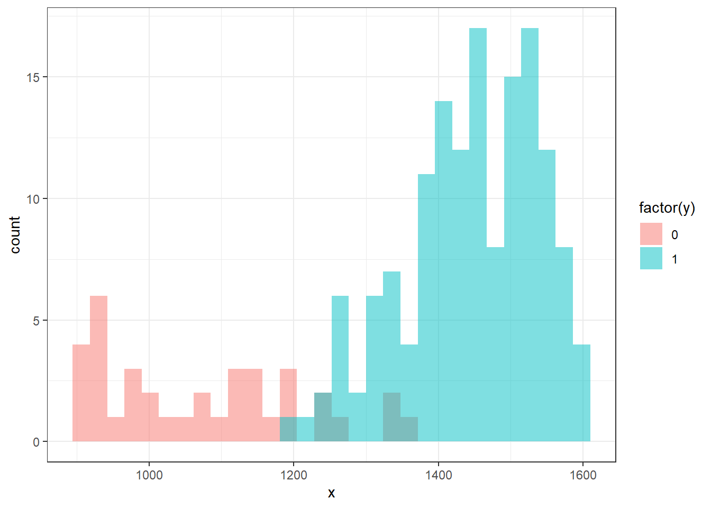
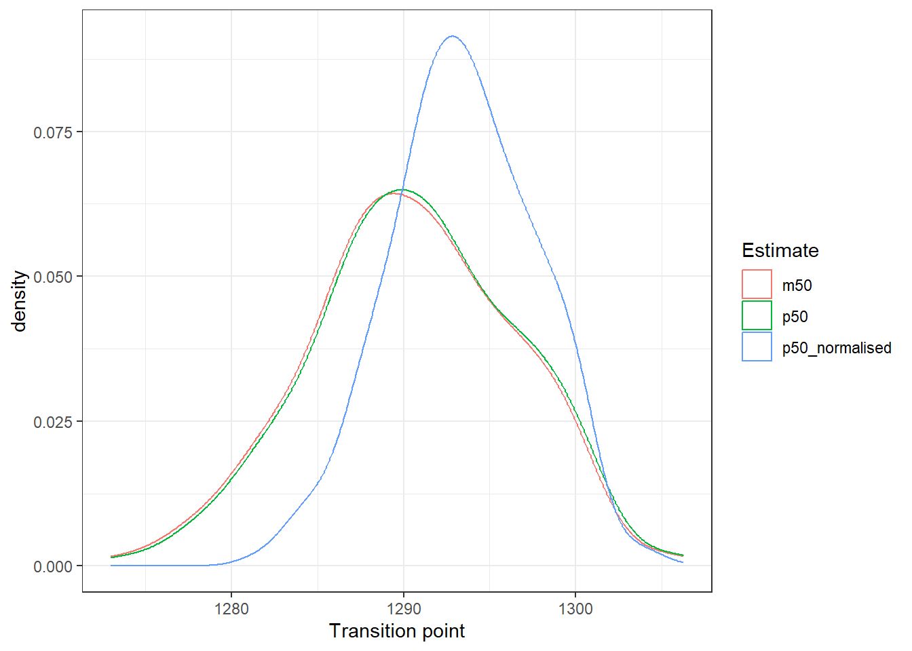
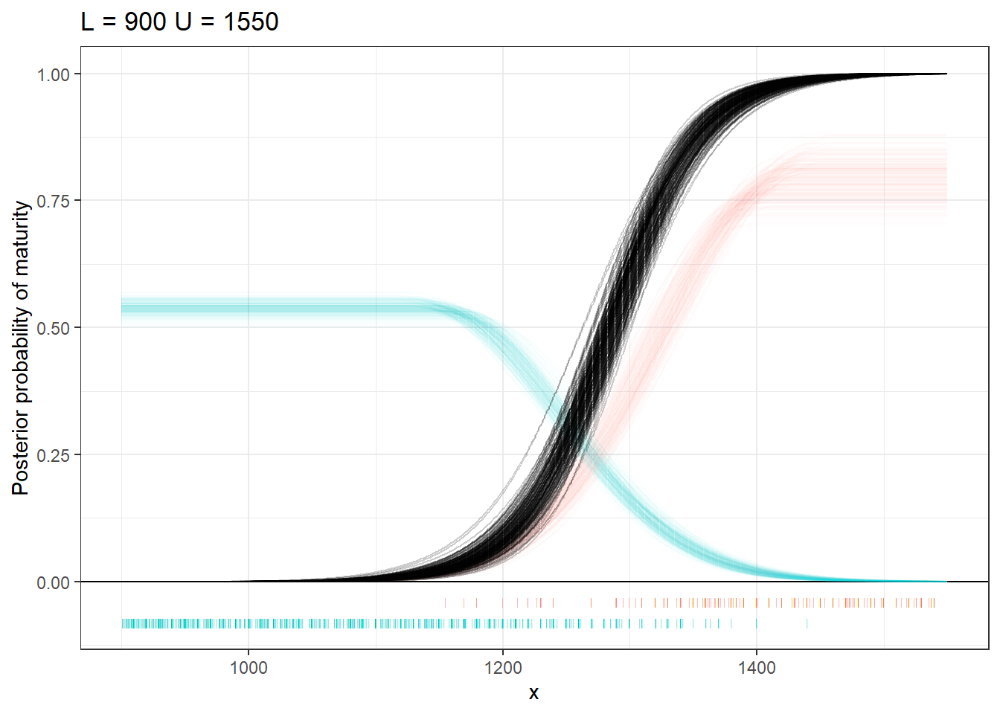
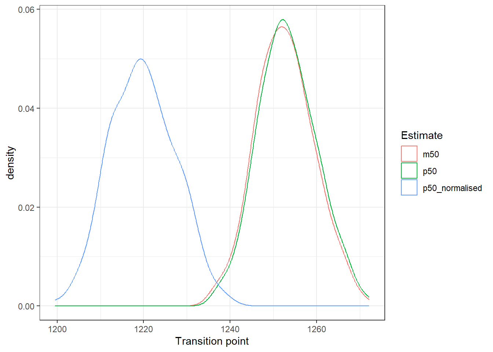
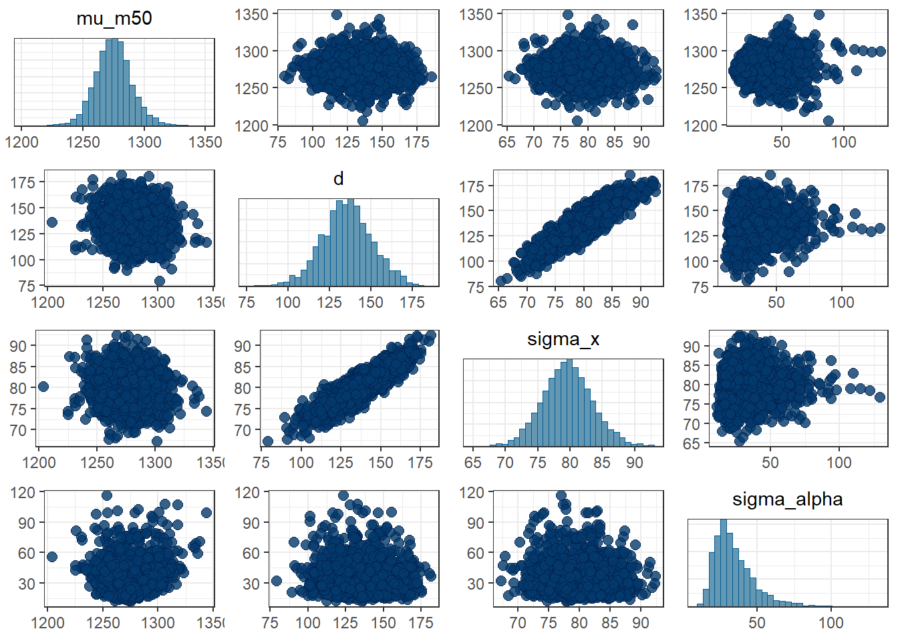

library(tidyverse)
library(rstan)
library(bayesplot)
library(posterior)
theme_set(theme_bw())Uniform-Gaussian Generative Classifier
# graph codeIntroduction
Problem
This document describes and fits a generative classifier model for estimating the length at which an animal transitions from immature to mature, based on a dataset of individuals that are either mature (\(y\)=0) or immature (\(y\)=1), with lengths (\(x\)).
Current methods of estimating transition lengths have problems.
Ad hoc methods (e.g., midpoint between smallest mature and largest immature) have no scientific basis and are not probabilistic.
Discriminative classifiers, such as logistic regression, explicitly model the probability of \(y\)=1 for each value of \(x\). As such, they are very sensitive to unbalanced sample sizes of immature and mature, which is very common.
Generative classifiers, such as linear discriminant analysis (LDA), model the distributions of \(x | y = 0\) and \(x | y = 1\). The probability that \(y = 1 | x\) is given by Bayes rule, essentially comparing the relative densities of the two distributions. Generative classifiers are not so sensitive to outliers because the densities. However, if a conventional distribution such as the Gaussian (as in LDA) is used, the output can be heavily influenced by data that are far away from the transition range. For example, if the transition range is around 1000, the mean and standard deviation can be heavily influenced by including points in the 200-500 range, and this affects estimates of the transition probability. Whereas, the location of the transition range should only really be informed by points that are close to the transition range.
The influence of data at the opposite side of the distributions from the transition range can be ameliorated to some degree by truncating the data. However, the results are then quite heavily influenced by the choice of truncation points. The further away from the transition range one places the truncation point, the more bias is placed in the direction of that transition point.
What is required is a generative model that is (1) robust to unbalanced sample sizes and (2) not unduly influenced by data that are not nearby the transition range in terms of their values of \(x\).
Solution
Here, we overcome these challenges by fitting a mixture of a Gaussian and a uniform distribution. The left (\(y = 0\)) group is modelled with a uniform on the left that begins at the lower truncation value. The distribution remains flat until it approaches the transition range, at which point the distribution declines according to a Gaussian. The right (\(y = 1\)) group increases according to a Gaussian distribution and then levels off to a uniform, terminating at the upper truncation value.
Summary from ChatGPT
Model Summary
This model describes a hierarchical Bayesian framework for classifying observations \(x\) into two categories \(y \in \{0, 1\}\) based on the location of \(x\) relative to a transition point \(m_{50}\). The distribution of \(x\) is assumed to be piecewise, combining uniform and Gaussian components to capture distinct behaviors on either side of the transition point. Specifically, the model assumes that the distribution of \(x\) for \(y = 0\) (immature individuals) has a uniform shape up to a point \(\mu_0\), after which it follows a Gaussian decay. For \(y = 1\) (mature individuals), the distribution is uniform after a point \(\mu_1\), with a Gaussian shape below this threshold.
The transition point \(m_{50}\) is a key parameter, representing the value of \(x\) where the probability of observing \(y = 0\) or \(y = 1\) is equal. This model also includes parameters for the spread of the transition zone (parameter \(d\)) and the variability in observations (parameter \(\sigma\)).
By allowing for different behaviors on either side of \(m_{50}\), this model offers a flexible framework that can capture asymmetric patterns in the data. Its strengths lie in the ability to model transition regions between distinct populations with both uniform and Gaussian behaviors, which may be useful when the boundary between groups is not sharp but exhibits a gradual overlap.
Likelihood
The likelihood for the model is based on two different unnormalized log-density functions for the two categories \(y\).
For \(y = 0\) (immature), the log-density function is piecewise uniform and Gaussian for \(x\) values below and above \(\mu_0\) respectively:
\[ f(x_i | y_i = 0, \mu_0, \sigma, L) = \begin{cases} 0 & \text{if } x_i \leq \mu_0 \\ -\frac{(x_i - \mu_0)^2}{2\sigma^2} & \text{if } x_i > \mu_0 \end{cases} \]
For \(y = 1\) (mature), the log-density function is similarly piecewise for \(x\) values below and above \(\mu_1\):
\[ f(x_i | y_i = 1, \mu_1, \sigma, U) = \begin{cases} -\frac{(x_i - \mu_1)^2}{2\sigma^2} & \text{if } x_i < \mu_1 \\ 0 & \text{if } x_i \geq \mu_1 \end{cases} \]
The overall likelihood contribution for each observation is:
\[ \log \text{likelihood for } y_i = 0: \quad \log(f(x_i)) - \log(C_0) \]
\[ \log \text{likelihood for } y_i = 1: \quad \log(f(x_i)) - \log(C_1) \]
where \(C_0\) and \(C_1\) are normalization constants ensuring the densities integrate to 1:
\[ C_0 = \sqrt{2\pi} \cdot \sigma / 2 + (\mu_0 - L) \]
\[ C_1 = \sqrt{2\pi} \cdot \sigma / 2 + (U - \mu_1) \]
Priors
The priors for the model parameters are chosen as follows:
The transition point \(m_{50}\) is modeled as: \[ m_{50} \sim \mathcal{N}(1300, 50) \]
The difference between the means for the two categories, \(d\), follows: \[ d \sim \mathcal{N}(100, 100) \]
The standard deviation \(\sigma\) is given a prior: \[ \sigma \sim \mathcal{N}(100, 50) \]
Transformed Parameters
The means for each group are defined in terms of \(m_{50}\) and \(d\):
\[ \mu_0 = m_{50} - \frac{d}{2}, \quad \mu_1 = m_{50} + \frac{d}{2} \]
Full Model
The full model combines the log-likelihood contributions for each observation across \(N\) observations:
\[ \log p(x, y | m_{50}, d, \sigma) = \sum_{i=1}^{N} \left( \log(f(x_i | y_i, \mu_{y_i}, \sigma)) - \log(C_{y_i}) \right) \]
Advantages of the Model
Piecewise Density: The piecewise construction of the likelihood allows the model to handle a uniform distribution over a region and a Gaussian distribution beyond it, reflecting real-world situations where individuals in one class (e.g., immature) cluster within certain bounds but then trail off gradually.
Flexibility in Transition: The model can flexibly adjust the width of the transition zone between classes via the \(d\) parameter, allowing for asymmetric transition regions.
Bayesian Inference: This approach allows for a full Bayesian treatment, including the incorporation of prior information and the ability to quantify uncertainty in the transition point and other parameters.
Normalization: The use of normalization constants ensures that the densities are properly scaled, which is critical for ensuring a valid probabilistic model.
This model is well-suited for applications where the distinction between categories is not sharp, but rather involves gradual transitions that can be captured through a combination of uniform and Gaussian behaviors.
Compile Stan Code
stan_uniform_gaussian_twogroups <- stan_model(file = 'uniform_gaussian_twogroups.stan')stan_uniform_gaussian_twogroups |> get_stancode() |> cat()functions {
real uniform_gaussian_normalising_constant(real delta, real sigma) {
real sqrt_2pi = sqrt(2 * pi());
return (sqrt_2pi * sigma / 2) + delta;
}
real uniform_left_gaussian_log_density_unnormalised(real y, real mu, real sigma, real L) {
// Precompute repeated values
real sigma_sq = square(sigma);
// Declare the density variable
real log_density_unnormalised;
// Conditional structure for the piecewise density function
if (y <= mu) {
log_density_unnormalised = 0;
} else {
log_density_unnormalised = -0.5 * ( square(y - mu) / sigma_sq );
}
// Return the normalised density
return log_density_unnormalised ;
}
real uniform_right_gaussian_log_density_unnormalised(real y, real mu, real sigma, real U) {
// Precompute repeated values
real sigma_sq = square(sigma);
// Declare the density variable
real log_density_unnormalised;
// Conditional structure for the piecewise density function
if (y >= mu) {
log_density_unnormalised = 0;
} else {
log_density_unnormalised = -0.5 * ( square(y - mu) / sigma_sq );
}
// Return the normalised density
return log_density_unnormalised ;
}
}
data {
int<lower=0> N; // Number of data points
real L; // lower truncation
real U; // upper truncation
real<lower=L, upper=U> x[N]; // Observed values
int<lower=0, upper=1> y[N]; // response values
real<lower=0> prior_m50_mu;
real<lower=0> prior_m50_tau;
real<lower=0> prior_d_mu;
real<lower=0> prior_d_tau;
real<lower=0> prior_sigma_mu;
real<lower=0> prior_sigma_tau;
}
parameters {
real<lower=L,upper=U> m50; // Transition point
real<lower=0> d; // Difference between upper immature mean and lower mature mean
real<lower=0> sigma; // Standard deviation
}
transformed parameters{
// Means based on m50
real<lower=L> mu_0 = m50 - d / 2;
real<upper=U> mu_1 = m50 + d / 2;
// Compute the normalisation constants C
real C_0 = uniform_gaussian_normalising_constant(mu_0-L, sigma);
real C_1 = uniform_gaussian_normalising_constant(U-mu_1, sigma);
}
model {
// Priors
m50 ~ normal(prior_m50_mu, prior_m50_tau); // prior_m50_mu 1300; prior_m50_tau 100;
d ~ normal(prior_d_mu, prior_d_tau); // prior_d_mu 0; prior_d_tau 100;
sigma ~ normal(prior_sigma_mu, prior_sigma_tau); // prior_sigma_mu 0; prior_sigma_tau 100;
// Likelihood
for (i in 1:N) {
if (y[i] == 0) {
target += uniform_left_gaussian_log_density_unnormalised( x[i], mu_0, sigma, L ) - log(C_0);
} else {
target += uniform_right_gaussian_log_density_unnormalised( x[i], mu_1, sigma, U ) - log(C_1);
}
}
}Initial test
Load funcitons
source("uniform_gaussian_density.R")Plot
tibble(y = 900:2000) |>
rowwise() |>
mutate(
d = uniform_left_gaussian_density(
y, mu = 1200, sigma = 200, L = 1000)
) |>
ggplot() +
aes(x=y,y=d) +
geom_line()
Integrate
library(pracma) # For numerical integration
Attaching package: 'pracma'The following object is masked from 'package:purrr':
cross# Define parameters
mu <- 120
sigma <- 1
L <- 10
# Define the integration range
integrate_density <- function(y) {
uniform_left_gaussian_density(y, mu, sigma, L)
}
# Perform numerical integration over a wide range to cover all regions
area_under_curve <- integral(integrate_density, L - 500, mu + 500)
print(area_under_curve)[1] 1Should return 1
Utility functions
get_estimates
get_estimates <- function(fit, L, U, thin=20) {
fit |>
as_draws_df() |>
thin_draws(thin = thin) |>
expand_grid(x = seq(from=L, to=U, length=1000)) |>
rowwise() |>
mutate(
d0 = uniform_left_gaussian_density(x, mu_0, sigma, L),
d1 = uniform_right_gaussian_density(x, mu_1, sigma, U)
) |>
ungroup() |>
mutate(
n0 = d0 * C_0,
n1 = d1 * C_1,
p = n1 / ( n0 + n1 ),
p_normalised = d1 / ( d0 + d1 ),
p50 = p > 0.5,
p50_normalised = p_normalised > 0.5
)
}plot_cutpoint_estimates
plot_cutpoint_estimates <- function(dat) {
# post_d_nz |>
dat |>
group_by(.draw) |>
summarise(
p50 = min(x[p50], na.rm = TRUE),
p50_normalised = min(x[p50_normalised], na.rm = TRUE) ,
m50 = first(m50)
) |>
pivot_longer(cols = p50:m50, names_to = "Estimate", values_to = "Transition point") |>
ggplot() +
aes(x = `Transition point`, colour = `Estimate`) +
geom_density()
}plot_dist_transition
plot_dist_transition <- function(estimates, dat, L, U) {
estimates |>
ggplot() +
geom_hline(yintercept = 0) +
geom_line(
mapping = aes(x = x, y = d0*200, group = .draw),
alpha = .02,
colour = "#00BFC4"
) +
geom_line(
mapping = aes(x = x, y = d1*200, group = .draw),
alpha = .02,
colour = "#F8766D"
) +
geom_point(
data = dat |> filter(y == 0),
mapping = aes(x = x, y = -.08),
shape = "|",
alpha = .5,
colour = "#00BFC4"
) +
geom_point(
data = dat |> filter(y == 1),
mapping = aes(x = x, y = -.04),
shape = "|",
alpha = .5,
colour = "#F8766D"
) +
geom_line(
mapping = aes(x = x, y = p, group = .draw),
alpha = .2
) +
# xlim(1050,1550) +
ylab("Posterior probability of maturity") +
ggtitle(paste("L =", L, "U =", U))
}Set priors single pop
prior_m50_mu = 1300
prior_m50_tau = 50
prior_d_mu = 0
prior_d_tau = 100
prior_sigma_mu = 0
prior_sigma_tau = 100Test model on simulated data
Simulate data
# Simulate data
n0 <- 50 # Number of samples for class 0
n1 <- 5 * n0 # Number of samples for class 1
L = 900
U = 1600
# Parameters for simulation
m50_true <- 1300
sigma_x_true <- 100
d_true <- 300 # Distance factor between class 0 and 1 means
# Simulated x values
mu0_true <- m50_true - d_true / 2
mu1_true <- m50_true + d_true / 2
x0 <- c(
rnorm(n0/2, mean = mu0_true, sd = sigma_x_true),
rnorm(n0/2, mean = mu0_true - 250, sd = sigma_x_true*.5)
)
x1 <- c(
rnorm(n1/2, mean = mu1_true, sd = sigma_x_true),
rnorm(n1/2, mean = mu1_true + 250, sd = sigma_x_true*1.5)
)
data_fr <- tibble(
x = c(x0, x1),
y = c(rep(0, n0), rep(1, n1))
) |>
filter(x > L & x < U)
# Data for Stan
data_list <- list(
N = nrow(data_fr),
x = data_fr$x,
y = data_fr$y,
L = L,
U = U,
prior_m50_mu = prior_m50_mu,
prior_m50_tau = prior_m50_tau,
prior_d_mu = prior_d_mu,
prior_d_tau = prior_d_tau,
prior_sigma_mu = prior_sigma_mu,
prior_sigma_tau = prior_sigma_tau
)data.frame(x=data_list$x,y=data_list$y) |>
ggplot() +
aes(x = x, fill = factor(y), group = y) +
geom_histogram(alpha = .5, col = NA, position = "identity") `stat_bin()` using `bins = 30`. Pick better value with `binwidth`.
Fit to simulated data
# Fit the model using rstan
fit <- sampling(
stan_uniform_gaussian_twogroups,
data = data_list,
chains = 4,
cores = 4,
control = list(adapt_delta = 0.95)
)
fitInference for Stan model: anon_model.
4 chains, each with iter=2000; warmup=1000; thin=1;
post-warmup draws per chain=1000, total post-warmup draws=4000.
mean se_mean sd 2.5% 25% 50% 75% 97.5% n_eff
m50 1308.80 0.46 18.14 1275.00 1296.39 1307.78 1320.72 1346.57 1533
d 195.42 2.22 63.08 63.64 156.42 197.27 237.29 316.82 808
sigma 87.33 0.50 14.97 57.03 78.01 87.51 96.99 116.25 901
mu_0 1211.10 1.32 41.20 1131.70 1183.07 1210.33 1237.62 1296.50 973
mu_1 1406.51 1.05 30.82 1342.32 1387.95 1407.90 1427.20 1463.29 857
C_0 420.55 0.91 33.85 358.13 397.21 418.61 442.13 492.05 1389
C_1 302.94 0.47 17.13 271.15 291.00 302.54 314.32 336.68 1331
lp__ -1082.31 0.08 1.63 -1086.07 -1082.89 -1081.90 -1081.24 -1080.70 414
Rhat
m50 1.00
d 1.01
sigma 1.00
mu_0 1.00
mu_1 1.00
C_0 1.00
C_1 1.00
lp__ 1.01
Samples were drawn using NUTS(diag_e) at Fri Oct 11 23:28:50 2024.
For each parameter, n_eff is a crude measure of effective sample size,
and Rhat is the potential scale reduction factor on split chains (at
convergence, Rhat=1).Plot
data.frame(x=data_list$x,y=data_list$y) |>
ggplot() +
geom_histogram(
aes(x = x, y = after_stat(density), fill = factor(y), group = y),
alpha = .5, col = NA, position = "identity"
) +
geom_line(
data = fit |>
as_draws_df() |>
thin_draws(thin = 40) |>
expand_grid(x = seq(from=850, to=1650, length=500)) |>
rowwise() |>
mutate(
p = uniform_left_gaussian_density(x, mu_0, sigma, L)
),
mapping = aes(x = x, y = p, group = .draw),
alpha = .1,
col=1
) +
geom_line(
data = fit |>
as_draws_df() |>
thin_draws(thin = 40) |>
expand_grid(x = seq(from=850, to=1650, length=500)) |>
rowwise() |>
mutate(
p = uniform_right_gaussian_density(x, mu_1, sigma, U)
),
mapping = aes(x = x, y = p, group = .draw),
alpha = .1,
col=1
)`stat_bin()` using `bins = 30`. Pick better value with `binwidth`.post <- get_estimates(fit, data_list$L, data_list$U, thin = 10)plot_cutpoint_estimates(post)plot_dist_transition(post, data_fr, data_list$L, data_list$U)Try on nz data
Data
dat <- read_csv("Data/LHDC.csv") |>
filter(!(Population == "Southwest Atlantic" & !is.na(OWt))) |>
transmute(
Population,
Country,
Sex,
Stage = as_factor(LS_Score),
Length = TL
)New names:
Rows: 13495 Columns: 47
Column specification
Delimiter: "," chr
(8): ID, Source, Country, Species, Cap.gear, Sex, Population, Hemisphere dbl
(39): ...1, Cap.year, LS_Score, TL, sdtl, TWgt, sdtwgt, F.Ys.Wgt, D.T.Wg...
Use `spec()` to retrieve the full column specification for this data.
Specify the column types or set `show_col_types = FALSE` to quiet this message.
`` -> `...1`Cut points 1050 & 1550
Fit model
L = 1050
U = 1550
d_nz1 <- dat |>
filter(Length > L & Length < U) |>
filter(Population == "New Zealand" & Sex == "M") |>
transmute(
x = Length,
y = as.numeric(Stage == 3 )
)
d_nz1_list <- list(
N = nrow(d_nz1),
x = d_nz1$x,
y = d_nz1$y,
L = L,
U = U,
prior_m50_mu = prior_m50_mu,
prior_m50_tau = prior_m50_tau,
prior_d_mu = prior_d_mu,
prior_d_tau = prior_d_tau,
prior_sigma_mu = prior_sigma_mu,
prior_sigma_tau = prior_sigma_tau
)fit_d_nz1 <- sampling(
stan_uniform_gaussian_twogroups,
data = d_nz1_list,
chains = 4,
cores = 4,
control = list(adapt_delta = 0.95)
)# Extract and summarize results
print(fit_d_nz1)Inference for Stan model: anon_model.
4 chains, each with iter=2000; warmup=1000; thin=1;
post-warmup draws per chain=1000, total post-warmup draws=4000.
mean se_mean sd 2.5% 25% 50% 75% 97.5% n_eff
m50 1290.77 0.14 6.21 1277.88 1286.76 1290.93 1294.83 1303.03 1896
d 238.52 0.68 26.09 189.38 219.86 238.18 256.07 290.43 1474
sigma 91.70 0.18 6.99 78.76 86.77 91.31 96.45 106.38 1488
mu_0 1171.51 0.38 14.41 1142.67 1161.86 1171.71 1181.75 1197.98 1475
mu_1 1410.03 0.35 14.49 1381.95 1400.28 1409.56 1419.73 1438.92 1670
C_0 236.45 0.18 8.48 220.11 230.56 236.44 242.35 252.86 2285
C_1 254.91 0.22 9.89 235.87 248.05 254.92 261.44 274.52 2062
lp__ -3954.34 0.03 1.22 -3957.48 -3954.87 -3954.01 -3953.46 -3952.95 1684
Rhat
m50 1
d 1
sigma 1
mu_0 1
mu_1 1
C_0 1
C_1 1
lp__ 1
Samples were drawn using NUTS(diag_e) at Fri Oct 11 23:29:48 2024.
For each parameter, n_eff is a crude measure of effective sample size,
and Rhat is the potential scale reduction factor on split chains (at
convergence, Rhat=1).Summarise
Get estimates
post_d_nz1 <- get_estimates(fit_d_nz1, d_nz1_list$L, d_nz1_list$U)Plot cutpoints
plot_cutpoint_estimates(post_d_nz1)
Calculate probability of mature
plot_dist_transition(post_d_nz1, d_nz1, d_nz1_list$L, d_nz1_list$U)Cut points 1050 & 1650
Fit model
L = 1050
U = 1650
d_nz2 <- dat |>
filter(Length > L & Length < U) |>
filter(Population == "New Zealand" & Sex == "M") |>
transmute(
x = Length,
y = as.numeric(Stage == 3 )
)
d_nz2_list <- list(
N = nrow(d_nz2),
x = d_nz2$x,
y = d_nz2$y,
L = L,
U = U,
prior_m50_mu = prior_m50_mu,
prior_m50_tau = prior_m50_tau,
prior_d_mu = prior_d_mu,
prior_d_tau = prior_d_tau,
prior_sigma_mu = prior_sigma_mu,
prior_sigma_tau = prior_sigma_tau
)fit_d_nz2 <- sampling(
stan_uniform_gaussian_twogroups,
data = d_nz2_list,
chains = 4,
cores = 4,
control = list(adapt_delta = 0.95)
)# Extract and summarize results
print(fit_d_nz2)Inference for Stan model: anon_model.
4 chains, each with iter=2000; warmup=1000; thin=1;
post-warmup draws per chain=1000, total post-warmup draws=4000.
mean se_mean sd 2.5% 25% 50% 75% 97.5% n_eff
m50 1282.77 0.14 6.10 1270.66 1278.57 1282.83 1286.98 1294.51 1874
d 215.07 0.65 24.87 168.58 197.88 214.62 231.00 265.81 1454
sigma 89.71 0.19 6.91 77.16 84.90 89.39 93.98 104.55 1293
mu_0 1175.23 0.37 14.15 1146.30 1166.04 1175.83 1184.88 1202.22 1437
mu_1 1390.30 0.34 13.54 1364.39 1381.16 1390.13 1398.74 1417.70 1607
C_0 237.67 0.17 8.19 221.60 232.34 237.74 242.93 253.93 2461
C_1 372.14 0.20 9.68 353.70 365.13 372.21 378.92 391.28 2261
lp__ -4240.33 0.03 1.22 -4243.38 -4240.84 -4240.00 -4239.46 -4238.96 1306
Rhat
m50 1
d 1
sigma 1
mu_0 1
mu_1 1
C_0 1
C_1 1
lp__ 1
Samples were drawn using NUTS(diag_e) at Fri Oct 11 23:30:22 2024.
For each parameter, n_eff is a crude measure of effective sample size,
and Rhat is the potential scale reduction factor on split chains (at
convergence, Rhat=1).Summarise
Get estimates
post_d_nz2 <- get_estimates(fit_d_nz2, d_nz2_list$L, d_nz2_list$U)Plot cutpoints
plot_cutpoint_estimates(post_d_nz2)Calculate probability of mature
plot_dist_transition(post_d_nz2, d_nz2, d_nz2_list$L, d_nz2_list$U)Cutpoints 900 and 1650
Fit model
L = 900
U = 1650
d_nz3 <- dat |>
filter(Length > L & Length < U) |>
filter(Population == "New Zealand" & Sex == "M") |>
transmute(
x = Length,
y = as.numeric(Stage == 3 )
)
d_nz3_list <- list(
N = nrow(d_nz3),
x = d_nz3$x,
y = d_nz3$y,
L = L,
U = U,
prior_m50_mu = prior_m50_mu,
prior_m50_tau = prior_m50_tau,
prior_d_mu = prior_d_mu,
prior_d_tau = prior_d_tau,
prior_sigma_mu = prior_sigma_mu,
prior_sigma_tau = prior_sigma_tau
)fit_d_nz3 <- sampling(
stan_uniform_gaussian_twogroups,
data = d_nz3_list,
chains = 4,
cores = 4,
control = list(adapt_delta = 0.95)
)# Extract and summarize results
print(fit_d_nz3)Inference for Stan model: anon_model.
4 chains, each with iter=2000; warmup=1000; thin=1;
post-warmup draws per chain=1000, total post-warmup draws=4000.
mean se_mean sd 2.5% 25% 50% 75% 97.5% n_eff
m50 1275.06 0.14 6.25 1262.47 1270.86 1275.18 1279.27 1287.11 1917
d 245.11 0.67 24.96 198.66 227.91 244.58 261.04 295.27 1368
sigma 95.38 0.19 7.14 82.30 90.51 95.02 99.99 110.03 1355
mu_0 1152.51 0.37 14.38 1123.75 1143.34 1153.12 1162.12 1179.73 1476
mu_1 1397.62 0.36 13.52 1371.61 1388.23 1397.56 1406.45 1424.85 1430
C_0 372.05 0.16 7.80 356.95 366.86 372.04 377.36 387.21 2337
C_1 371.93 0.22 9.86 353.33 365.23 371.81 378.53 392.14 1946
lp__ -6645.65 0.03 1.23 -6648.92 -6646.15 -6645.32 -6644.76 -6644.26 1511
Rhat
m50 1
d 1
sigma 1
mu_0 1
mu_1 1
C_0 1
C_1 1
lp__ 1
Samples were drawn using NUTS(diag_e) at Fri Oct 11 23:30:55 2024.
For each parameter, n_eff is a crude measure of effective sample size,
and Rhat is the potential scale reduction factor on split chains (at
convergence, Rhat=1).Summarise
post_d_nz3 <- get_estimates(fit_d_nz3, d_nz3_list$L, d_nz3_list$U)plot_cutpoint_estimates(post_d_nz3)plot_dist_transition(post_d_nz3, d_nz3, d_nz3_list$L, d_nz3_list$U)ggplot() +
geom_hline(yintercept = 0) +
geom_density(
data = d_nz3,
mapping = aes(x = x, colour = factor(y), group = factor(y)),
) +
geom_point(
data = d_nz3 |> filter(y == 0),
mapping = aes(x = x, y = -.0008),
shape = "|",
alpha = .5,
colour = "#00BFC4"
) +
geom_point(
data = d_nz3 |> filter(y == 1),
mapping = aes(x = x, y = -.0004),
shape = "|",
alpha = .5,
colour = "#F8766D"
) +
# xlim(1050,1550) +
ylab("Posterior probability of maturity") +
ggtitle("NZ data (truncated 900 to 1650)")
Cutpoints 900 and 1550
Fit model
L = 900
U = 1550
d_nz3b <- dat |>
filter(Length > L & Length < U) |>
filter(Population == "New Zealand" & Sex == "M") |>
transmute(
x = Length,
y = as.numeric(Stage == 3 )
)
d_nz3b_list <- list(
N = nrow(d_nz3b),
x = d_nz3b$x,
y = d_nz3b$y,
L = L,
U = U,
prior_m50_mu = prior_m50_mu,
prior_m50_tau = prior_m50_tau,
prior_d_mu = prior_d_mu,
prior_d_tau = prior_d_tau,
prior_sigma_mu = prior_sigma_mu,
prior_sigma_tau = prior_sigma_tau
)fit_d_nz3b <- sampling(
stan_uniform_gaussian_twogroups,
data = d_nz3b_list,
chains = 4,
cores = 4,
control = list(adapt_delta = 0.95)
)# Extract and summarize results
print(fit_d_nz3b)Inference for Stan model: anon_model.
4 chains, each with iter=2000; warmup=1000; thin=1;
post-warmup draws per chain=1000, total post-warmup draws=4000.
mean se_mean sd 2.5% 25% 50% 75% 97.5% n_eff
m50 1284.21 0.13 6.17 1271.99 1280.04 1284.26 1288.34 1296.38 2175
d 271.98 0.80 28.93 217.60 252.29 271.44 290.54 330.13 1296
sigma 97.88 0.21 7.64 83.77 92.56 97.76 102.96 113.68 1324
mu_0 1148.22 0.41 15.00 1118.00 1138.26 1148.45 1158.40 1176.27 1355
mu_1 1420.20 0.44 16.42 1388.66 1409.48 1419.75 1430.63 1453.60 1414
C_0 370.89 0.17 8.00 354.67 365.77 370.81 376.20 386.54 2155
C_1 252.47 0.24 10.75 231.23 245.37 252.49 259.63 273.75 2007
lp__ -6359.54 0.03 1.28 -6362.78 -6360.14 -6359.19 -6358.60 -6358.08 1355
Rhat
m50 1
d 1
sigma 1
mu_0 1
mu_1 1
C_0 1
C_1 1
lp__ 1
Samples were drawn using NUTS(diag_e) at Fri Oct 11 23:31:34 2024.
For each parameter, n_eff is a crude measure of effective sample size,
and Rhat is the potential scale reduction factor on split chains (at
convergence, Rhat=1).Summarise
post_d_nz3b <- get_estimates(fit_d_nz3b, d_nz3b_list$L, d_nz3b_list$U)plot_cutpoint_estimates(post_d_nz3b)plot_dist_transition(post_d_nz3b, d_nz3b, d_nz3b_list$L, d_nz3b_list$U)
ggplot() +
geom_hline(yintercept = 0) +
geom_density(
data = d_nz3b,
mapping = aes(x = x, colour = factor(y), group = factor(y)),
) +
geom_point(
data = d_nz3b |> filter(y == 0),
mapping = aes(x = x, y = -.0008),
shape = "|",
alpha = .5,
colour = "#00BFC4"
) +
geom_point(
data = d_nz3b |> filter(y == 1),
mapping = aes(x = x, y = -.0004),
shape = "|",
alpha = .5,
colour = "#F8766D"
) +
# xlim(1050,1550) +
ylab("Posterior probability of maturity") +
ggtitle("NZ data (truncated 900 to 1550)")
Cutpoints 400 and 1550
Fit model
L = 400
U = 1550
d_nz4b <- dat |>
filter(Length > L & Length < U) |>
filter(Population == "New Zealand" & Sex == "M") |>
transmute(
x = Length,
y = as.numeric(Stage == 3 )
)
d_nz4b_list <- list(
N = nrow(d_nz4b),
x = d_nz4b$x,
y = d_nz4b$y,
L = L,
U = U,
prior_m50_mu = prior_m50_mu,
prior_m50_tau = prior_m50_tau,
prior_d_mu = prior_d_mu,
prior_d_tau = prior_d_tau,
prior_sigma_mu = prior_sigma_mu,
prior_sigma_tau = prior_sigma_tau
)fit_d_nz4b <- sampling(
stan_uniform_gaussian_twogroups,
data = d_nz4b_list,
chains = 4,
cores = 4,
control = list(adapt_delta = 0.95)
)Warning: There were 4 divergent transitions after warmup. See
https://mc-stan.org/misc/warnings.html#divergent-transitions-after-warmup
to find out why this is a problem and how to eliminate them.Warning: Examine the pairs() plot to diagnose sampling problems# Extract and summarize results
print(fit_d_nz4b)Inference for Stan model: anon_model.
4 chains, each with iter=2000; warmup=1000; thin=1;
post-warmup draws per chain=1000, total post-warmup draws=4000.
mean se_mean sd 2.5% 25% 50% 75% 97.5%
m50 1265.29 0.19 7.26 1250.64 1260.44 1265.33 1270.28 1279.32
d 407.24 1.13 37.94 336.20 381.31 406.06 432.30 484.54
sigma 127.89 0.31 10.04 109.33 120.81 127.72 134.30 148.50
mu_0 1061.67 0.64 20.54 1020.29 1048.01 1062.56 1075.94 1100.85
mu_1 1468.91 0.55 20.07 1431.06 1454.65 1468.57 1481.97 1509.44
C_0 821.96 0.27 9.62 802.53 815.43 822.34 828.41 840.81
C_1 241.38 0.30 12.73 217.07 232.66 241.12 250.56 265.82
lp__ -18448.88 0.04 1.24 -18452.01 -18449.42 -18448.55 -18447.99 -18447.48
n_eff Rhat
m50 1520 1
d 1123 1
sigma 1057 1
mu_0 1021 1
mu_1 1339 1
C_0 1277 1
C_1 1840 1
lp__ 1196 1
Samples were drawn using NUTS(diag_e) at Fri Oct 11 23:32:24 2024.
For each parameter, n_eff is a crude measure of effective sample size,
and Rhat is the potential scale reduction factor on split chains (at
convergence, Rhat=1).Summarise
post_d_nz4b <- get_estimates(fit_d_nz4b, d_nz4b_list$L, d_nz4b_list$U)plot_cutpoint_estimates(post_d_nz4b)plot_dist_transition(post_d_nz4b, d_nz4b, d_nz4b_list$L, d_nz4b_list$U)Cutpoints 400 and 1650
Fit model
L = 400
U = 1650
d_nz4 <- dat |>
filter(Length > L & Length < U) |>
filter(Population == "New Zealand" & Sex == "M") |>
transmute(
x = Length,
y = as.numeric(Stage == 3 )
)
d_nz4_list <- list(
N = nrow(d_nz4),
x = d_nz4$x,
y = d_nz4$y,
L = L,
U = U,
prior_m50_mu = prior_m50_mu,
prior_m50_tau = prior_m50_tau,
prior_d_mu = prior_d_mu,
prior_d_tau = prior_d_tau,
prior_sigma_mu = prior_sigma_mu,
prior_sigma_tau = prior_sigma_tau
)fit_d_nz4 <- sampling(
stan_uniform_gaussian_twogroups,
data = d_nz4_list,
chains = 4,
cores = 4,
control = list(adapt_delta = 0.95)
)# Extract and summarize results
print(fit_d_nz4)Inference for Stan model: anon_model.
4 chains, each with iter=2000; warmup=1000; thin=1;
post-warmup draws per chain=1000, total post-warmup draws=4000.
mean se_mean sd 2.5% 25% 50% 75% 97.5%
m50 1252.87 0.18 7.26 1238.08 1248.28 1252.93 1257.88 1266.57
d 365.85 1.01 34.27 302.08 342.55 364.86 388.39 434.66
sigma 123.73 0.31 9.66 105.78 117.27 123.09 129.87 144.02
mu_0 1069.95 0.66 19.81 1028.53 1057.25 1071.04 1083.00 1107.21
mu_1 1435.80 0.46 17.33 1402.94 1423.73 1435.65 1446.97 1471.41
C_0 825.02 0.28 9.37 806.14 819.00 825.33 831.26 842.76
C_1 369.28 0.26 11.61 346.69 361.42 369.01 376.78 392.56
lp__ -18736.20 0.04 1.22 -18739.30 -18736.80 -18735.89 -18735.30 -18734.79
n_eff Rhat
m50 1567 1
d 1145 1
sigma 969 1
mu_0 898 1
mu_1 1429 1
C_0 1123 1
C_1 2012 1
lp__ 1086 1
Samples were drawn using NUTS(diag_e) at Fri Oct 11 23:33:20 2024.
For each parameter, n_eff is a crude measure of effective sample size,
and Rhat is the potential scale reduction factor on split chains (at
convergence, Rhat=1).Summarise
post_d_nz4 <- get_estimates(fit_d_nz4, d_nz4_list$L, d_nz4_list$U)plot_cutpoint_estimates(post_d_nz4)plot_dist_transition(post_d_nz4, d_nz4, d_nz4_list$L, d_nz4_list$U)Summarise sensitivity to cutpoints
bind_cols(
"L = 1050, U = 1550" = extract(fit_d_nz1)$m50, # d_nz1_list$L; d_nz1_list$U
"L = 1050, U = 1650" = extract(fit_d_nz2)$m50, # d_nz2_list$L; d_nz2_list$U
"L = 900, U = 1650" = extract(fit_d_nz3)$m50, # d_nz3_list$L; d_nz3_list$U
"L = 900, U = 1550" = extract(fit_d_nz3b)$m50, # d_nz3b_list$L; d_nz3b_list$U
"L = 400, U = 1650" = extract(fit_d_nz4)$m50, # d_nz4_list$L; d_nz4_list$U
"L = 400, U = 1550" = extract(fit_d_nz4b)$m50 # d_nz4b_list$L; d_nz4b_list$U
) |>
pivot_longer(everything(), names_to = "Truncation values", values_to = "Transition point") |>
ggplot() +
aes(x=`Transition point`, colour=`Truncation values`) +
geom_density() +
ylab("Posterior density")
J populations
Compile Stan code
stan_uniform_gaussian_Jpopulations <- stan_model(file = 'uniform_gaussian_Jpopulations.stan')Print Stan model
stan_uniform_gaussian_Jpopulations |> get_stancode() |> cat()functions {
real uniform_gaussian_normalising_constant(real delta, real sigma) {
real sqrt_2pi = sqrt(2 * pi());
return (sqrt_2pi * sigma / 2) + delta;
}
real uniform_left_gaussian_log_density_unnormalised(real y, real mu, real sigma, real L) {
// Declare the density variable
real log_density_unnormalised;
// Conditional structure for the piecewise density function
if (y <= mu) {
log_density_unnormalised = 0;
} else {
log_density_unnormalised = -0.5 * ( square(y - mu) / square(sigma) );
}
// Return the normalised density
return log_density_unnormalised ;
}
real uniform_right_gaussian_log_density_unnormalised(real y, real mu, real sigma, real U) {
// Declare the density variable
real log_density_unnormalised;
// Conditional structure for the piecewise density function
if (y >= mu) {
log_density_unnormalised = 0;
} else {
log_density_unnormalised = -0.5 * ( square(y - mu) / square(sigma) );
}
// Return the normalised density
return log_density_unnormalised ;
}
}
data {
int<lower=0> N; // Number of data points
int<lower=1> J; // number of populations
real L; // lower truncation
real U; // upper truncation
real<lower=L, upper=U> x[N]; // Observed values: lengths
int<lower=0, upper=1> y[N]; // Response: 0 = immature, 1 = mature
int<lower=1, upper=J> pop[N]; // population index for each data point
real<lower=0> prior_mu_m50_mu;
real<lower=0> prior_mu_m50_tau;
real<lower=0> prior_d_mu;
real<lower=0> prior_d_tau;
real<lower=0> prior_sigma_x_tau;
real<lower=0> prior_sigma_alpha_tau;
}
parameters {
real<lower=L,upper=U> mu_m50; // Mean transition point
real<lower=0> d; // Difference between upper immature mean and lower mature mean
real z[J]; // z scores of population effects on m50_global (non-centred parameterisation)
real<lower=0> sigma_x; // Standard deviation of lengths (variation in transition)
real<lower=0> sigma_alpha; // Standard deviation of population transition points
}
transformed parameters{
real alpha[J];
real m50_pop[J];
real mu0_pop[J];
real mu1_pop[J];
real C0_pop[J];
real C1_pop[J];
for(j in 1:J) {
alpha[j] = z[j] * sigma_alpha; // non-centred parameterisation
m50_pop[j] = mu_m50 + alpha[j];
mu0_pop[j] = m50_pop[j] - d / 2;
mu1_pop[j] = m50_pop[j] + d / 2;
// Compute the normalisation constants C
C0_pop[j] = uniform_gaussian_normalising_constant(mu0_pop[j]-L, sigma_x);
C1_pop[j] = uniform_gaussian_normalising_constant(U-mu1_pop[j], sigma_x);
}
}
model {
// Priors
mu_m50 ~ normal(prior_mu_m50_mu, prior_mu_m50_tau); // 1300, 50;
d ~ normal(prior_d_mu, prior_d_tau); // prior_d_mu 0; prior_d_tau 100;
sigma_x ~ normal(0, prior_sigma_x_tau); // prior_sigma_mu 0; prior_sigma_tau 100;
z ~ normal(0, 1);
sigma_alpha ~ normal(0, prior_sigma_alpha_tau); // 0, 50
// Likelihood
for (i in 1:N) {
if (y[i] == 0) {
target += uniform_left_gaussian_log_density_unnormalised( x[i], mu0_pop[pop[i]], sigma_x, L ) - log(C0_pop[pop[i]]);
} else {
target += uniform_right_gaussian_log_density_unnormalised( x[i], mu1_pop[pop[i]], sigma_x, U ) - log(C1_pop[pop[i]]);
}
}
}Set priors J pop
prior_mu_m50_mu = 1300
prior_mu_m50_tau = 50
prior_d_mu = 0
prior_d_tau = 100
prior_sigma_x_tau = 50
prior_sigma_alpha_tau = 50Fit to actual data
Prepare data
L = 1050
U = 1550
d_pop <- dat |>
filter(Length > L & Length < U & Sex == "M" & Population != "Northeast Pacific") |>
transmute(
x = Length,
y = as.numeric(Stage == 3),
pop = Population |> as.factor() |> as.numeric()
)d_pop_list <- list(
N = nrow(d_pop),
x = d_pop$x,
y = d_pop$y,
pop = d_pop$pop,
J = n_distinct(d_pop$pop),
U = U,
L = L,
prior_mu_m50_mu = prior_mu_m50_mu,
prior_mu_m50_tau = prior_mu_m50_tau,
prior_d_mu = prior_d_mu,
prior_d_tau = prior_d_tau,
prior_sigma_x_tau = prior_sigma_x_tau,
prior_sigma_alpha_tau = prior_sigma_alpha_tau
)popkey <- dat |>
filter( Population != "Northeast Pacific" ) |>
transmute(
pop = Population |> as.factor() |> as.numeric(),
key = Population
) |>
unique() |>
arrange(pop)
popkey# A tibble: 5 2
pop key
<dbl> <chr>
1 1 Australia
2 2 New Zealand
3 3 Northeast Atlantic
4 4 South Africa
5 5 Southwest AtlanticFit model
fit_d_pop <- sampling(
stan_uniform_gaussian_Jpopulations,
data = d_pop_list,
chains = 4,
# iter = 2000,
# warmup = 500,
cores = 4,
control = list(adapt_delta = 0.95)
)fit_d_popInference for Stan model: anon_model.
4 chains, each with iter=2000; warmup=1000; thin=1;
post-warmup draws per chain=1000, total post-warmup draws=4000.
mean se_mean sd 2.5% 25% 50% 75%
mu_m50 1274.59 0.47 16.13 1242.33 1264.74 1274.00 1283.74
d 135.92 0.34 14.77 106.27 126.22 135.85 145.87
z[1] 1.06 0.02 0.61 -0.05 0.64 1.03 1.46
z[2] 0.27 0.01 0.50 -0.66 -0.07 0.27 0.61
z[3] -0.59 0.01 0.52 -1.62 -0.93 -0.58 -0.24
z[4] 0.22 0.01 0.48 -0.68 -0.11 0.21 0.54
z[5] -1.22 0.02 0.59 -2.46 -1.61 -1.19 -0.82
sigma_x 79.63 0.09 3.79 72.14 77.10 79.58 82.20
sigma_alpha 34.81 0.42 14.18 16.41 24.89 31.52 41.47
alpha[1] 31.91 0.48 16.75 -2.43 22.02 31.89 42.26
alpha[2] 7.84 0.47 17.13 -27.66 -2.22 8.31 18.40
alpha[3] -18.83 0.48 17.76 -57.05 -29.32 -17.87 -7.69
alpha[4] 6.09 0.46 16.55 -28.50 -3.64 6.51 16.22
alpha[5] -37.87 0.47 16.93 -74.09 -48.14 -37.06 -27.05
m50_pop[1] 1306.50 0.10 6.35 1293.96 1302.33 1306.54 1310.82
m50_pop[2] 1282.43 0.11 7.08 1268.88 1277.57 1282.39 1287.45
m50_pop[3] 1255.77 0.15 9.80 1236.24 1249.26 1255.83 1262.49
m50_pop[4] 1280.68 0.08 5.56 1269.85 1276.94 1280.64 1284.33
m50_pop[5] 1236.73 0.12 6.74 1223.34 1232.24 1236.69 1241.25
mu0_pop[1] 1238.55 0.23 11.00 1217.10 1231.10 1238.43 1245.85
mu0_pop[2] 1214.47 0.18 9.63 1195.85 1207.94 1214.58 1221.08
mu0_pop[3] 1187.81 0.24 12.76 1162.30 1179.10 1187.95 1196.50
mu0_pop[4] 1212.72 0.21 10.31 1192.49 1205.90 1212.66 1219.55
mu0_pop[5] 1168.77 0.26 11.72 1145.94 1161.00 1168.65 1176.43
mu1_pop[1] 1374.46 0.16 8.28 1358.13 1368.85 1374.29 1380.09
mu1_pop[2] 1350.39 0.22 10.80 1329.17 1342.94 1350.40 1357.85
mu1_pop[3] 1323.73 0.23 11.77 1300.81 1315.79 1323.53 1331.87
mu1_pop[4] 1348.64 0.18 8.04 1332.40 1343.43 1348.61 1353.91
mu1_pop[5] 1304.69 0.14 7.91 1289.03 1299.42 1304.82 1310.06
C0_pop[1] 288.35 0.15 8.22 272.12 282.92 288.27 293.82
C0_pop[2] 264.28 0.11 7.30 250.07 259.38 264.31 269.27
C0_pop[3] 237.62 0.18 10.89 216.31 230.12 237.77 244.98
C0_pop[4] 262.53 0.13 7.93 246.96 257.25 262.33 267.75
C0_pop[5] 218.58 0.17 8.89 201.10 212.70 218.45 224.44
C1_pop[1] 275.34 0.10 6.54 262.45 271.00 275.36 279.56
C1_pop[2] 299.42 0.15 8.76 282.55 293.39 299.50 305.38
C1_pop[3] 326.08 0.17 10.17 306.58 319.03 326.14 332.84
C1_pop[4] 301.17 0.09 5.35 290.88 297.53 301.08 304.65
C1_pop[5] 345.12 0.10 6.45 332.80 340.69 345.04 349.43
lp__ -15823.74 0.07 2.43 -15829.54 -15825.17 -15823.38 -15822.00
97.5% n_eff Rhat
mu_m50 1308.90 1200 1
d 164.74 1843 1
z[1] 2.35 1135 1
z[2] 1.24 1357 1
z[3] 0.38 1394 1
z[4] 1.18 1166 1
z[5] -0.14 1165 1
sigma_x 87.10 1900 1
sigma_alpha 70.91 1147 1
alpha[1] 65.48 1231 1
alpha[2] 41.10 1345 1
alpha[3] 14.40 1346 1
alpha[4] 38.93 1281 1
alpha[5] -6.04 1305 1
m50_pop[1] 1319.23 4293 1
m50_pop[2] 1296.28 4477 1
m50_pop[3] 1274.64 4064 1
m50_pop[4] 1291.78 4788 1
m50_pop[5] 1249.83 3424 1
mu0_pop[1] 1260.89 2198 1
mu0_pop[2] 1233.05 2862 1
mu0_pop[3] 1212.11 2872 1
mu0_pop[4] 1233.06 2374 1
mu0_pop[5] 1192.11 2081 1
mu1_pop[1] 1390.98 2747 1
mu1_pop[2] 1371.26 2348 1
mu1_pop[3] 1346.79 2719 1
mu1_pop[4] 1364.25 1914 1
mu1_pop[5] 1320.07 3174 1
C0_pop[1] 304.55 3115 1
C0_pop[2] 278.73 4468 1
C0_pop[3] 258.58 3826 1
C0_pop[4] 278.54 3682 1
C0_pop[5] 236.25 2822 1
C1_pop[1] 288.30 4538 1
C1_pop[2] 316.30 3540 1
C1_pop[3] 346.03 3702 1
C1_pop[4] 311.68 3767 1
C1_pop[5] 358.01 4512 1
lp__ -15819.99 1185 1
Samples were drawn using NUTS(diag_e) at Fri Oct 11 23:34:47 2024.
For each parameter, n_eff is a crude measure of effective sample size,
and Rhat is the potential scale reduction factor on split chains (at
convergence, Rhat=1).Checking
check_hmc_diagnostics(fit_d_pop)
Divergences:0 of 4000 iterations ended with a divergence.
Tree depth:0 of 4000 iterations saturated the maximum tree depth of 10.
Energy:E-BFMI indicated no pathological behavior.fit_d_pop |>
mcmc_pairs(
pars = c(
"mu_m50",
# "m50_pop[1]", "m50_pop[2]","m50_pop[3]","m50_pop[4]","m50_pop[5]","m50_pop[6]",
"d", "sigma_x", "sigma_alpha")
)fit_d_pop |>
mcmc_pairs(
pars = c(
"mu_m50",
"m50_pop[1]", "m50_pop[2]","m50_pop[3]","m50_pop[4]","m50_pop[5]"
# "d", "sigma_x", "sigma_alpha"
)
)fit_d_pop |>
mcmc_pairs(
pars = c(
"mu_m50",
"alpha[1]", "alpha[2]","alpha[3]","alpha[4]","alpha[5]",
"d",
"sigma_x",
"sigma_alpha"
)
)
Plot posterior distributions of transition points
mcmc_areas(
fit_d_pop |> as.matrix(),
pars = c("mu_m50", "m50_pop[1]", "m50_pop[2]", "m50_pop[3]", "m50_pop[4]", "m50_pop[5]"),
prob = 0.8
) +
scale_y_discrete(
labels = c(
"mu_m50" = "Overall mean",
"m50_pop[1]" = popkey$key[1],
"m50_pop[2]" = popkey$key[2],
"m50_pop[3]" = popkey$key[3],
"m50_pop[4]" = popkey$key[4],
"m50_pop[5]" = popkey$key[5])) +
xlab("Transition length")Scale for y is already present.
Adding another scale for y, which will replace the existing scale.